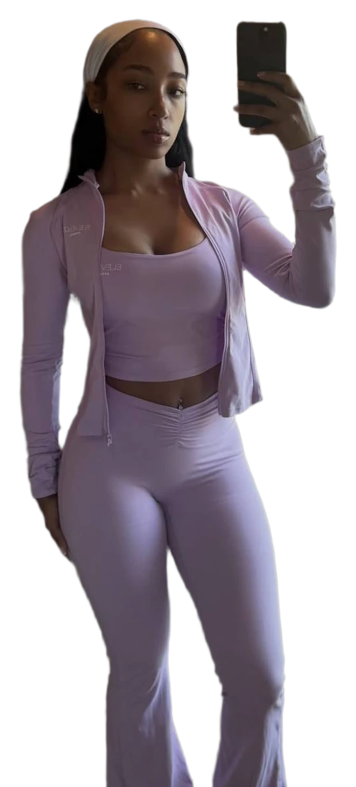
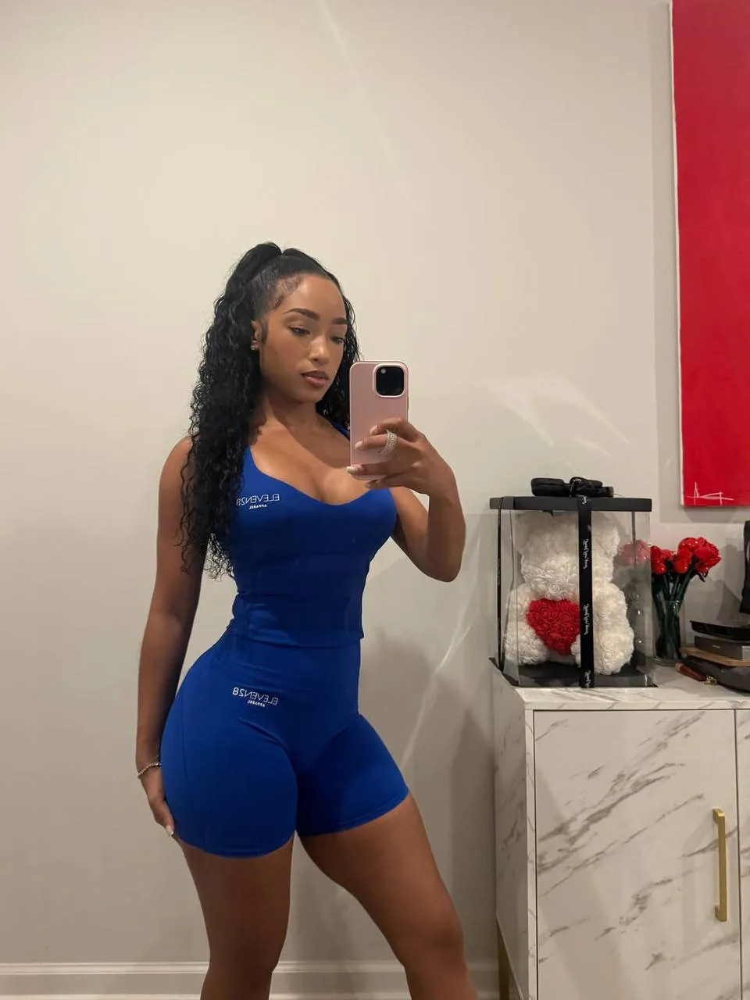
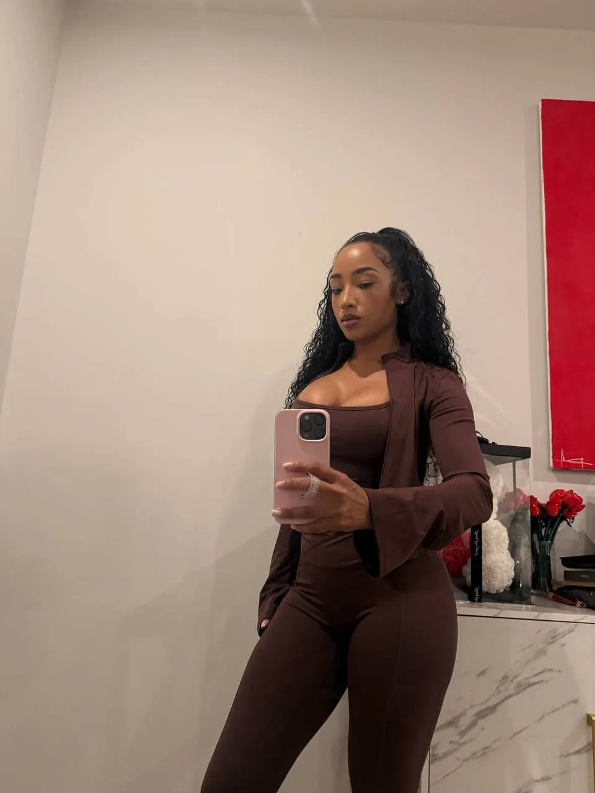
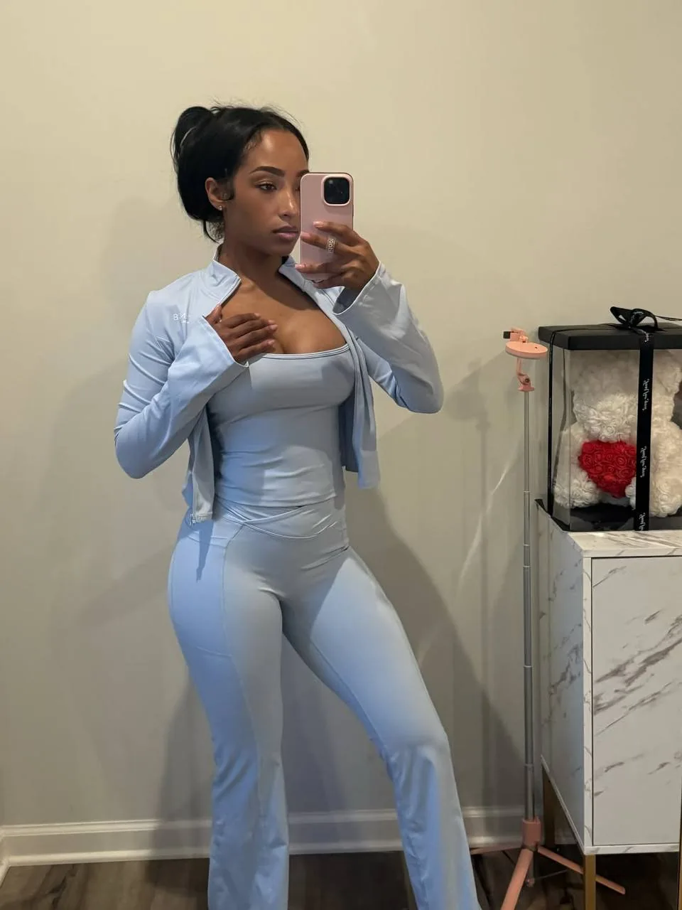
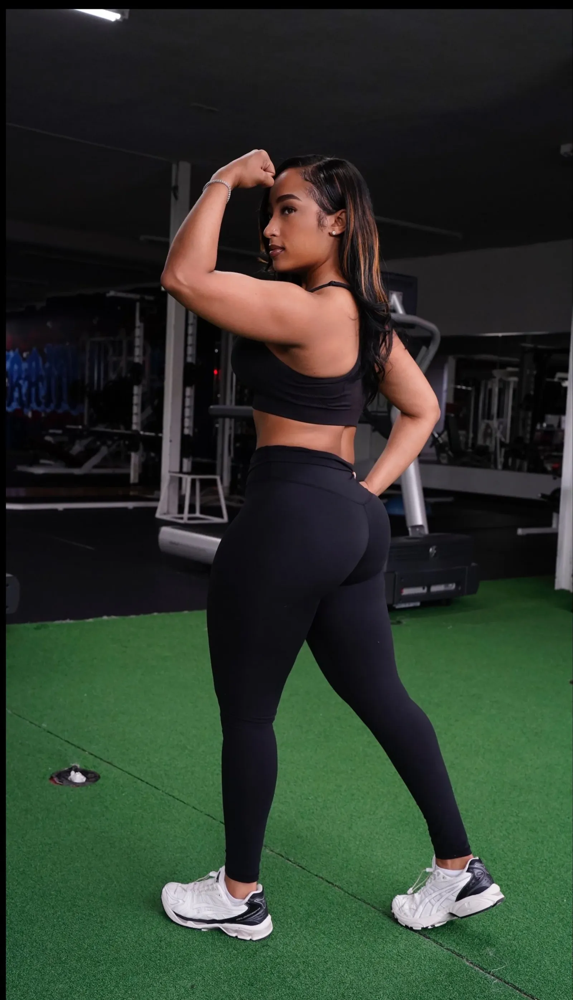

The nightfall atelier
Make something worth entering.
A visual study in atmosphere, proportion, and the details that reward a second look.
Explore the work
01 / The work
Three doors. One language.
The layout repeats. Each destination has its own purpose.
The visual study
See how a frame changes what an image says.
The motion study
Give an entrance a beginning and a resting place.
The first impression
Return to the composition that opens the page.
- Accent palette
- 01
- Study cards
- 03
- Possible iterations
- ∞
02 / The frame
Same frame. Different presence.
Three study images from ELEVEN28 by Shayla.




Let the page take a breath.
A full-width photograph interrupts the rhythm without abandoning the palette.
03 / A rhythm
Build. Observe. Refine.
The strip below moves continuously. You control whether it keeps moving.
04 / Optional atmosphere
You choose the entrance.
The page works without these enhancements. Try them one at a time.